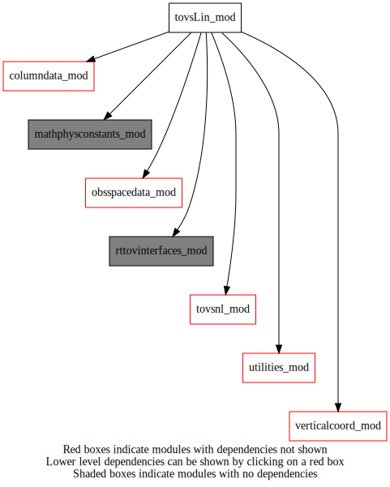
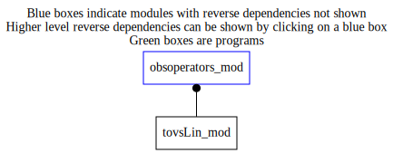

tovsLin_mod¶
Dependency Diagrams:
 Direct Dependency Diagram¶
 Reverse Dependency Diagram¶
Description
MODULE tovsLin_mod (prefix=’tvslin’ category=’5. Observation operators’)
- Purpose
Derived types, public variables and procedures related to the tangent-linear and adjoint versions of RTTOV
Quick access
- Routines
Needed modules
rttovinterfaces_mod: MODULE rttovInterfaces_mod (prefix=’’ category=’9. Global interfaces’)
rttov_types(rttov_profile(),rttov_profile_cloud(),rttov_radiance(),rttov_transmission(),rttov_chanprof(),rttov_emissivity())
rttov_const(gas_unit_specconc(),sensor_id_mw(),surftype_sea(),errorstatus_success())
parkind1(jpim(),jprb())
verticalcoord_mod: MODULE verticalCoord_mod (prefix=’vco’ category=’7. Low-level data objects’)
tovsnl_mod: MODULE tovsNL_mod (prefix=’tvs’ category=’5. Observation operators’)
utilities_mod: MODULE utilities_mod (prefix=’utl’ category=’8. Low-level utilities and constants’)
mathphysconstants_mod: MODULE mathPhysConstants_mod (prefix=’mpc’ category=’8. Low-level utilities and constants’)
obsspacedata_mod: MODULE obsSpaceData_mod (prefix=’obs’ category=’6. High-level data objects’)
columndata_mod: MODULE columnData_mod (prefix=’col’ category=’6. High-level data objects’)Variables
Subroutines and functions
- subroutine tovslin_mod/tvslin_rttov_tl(columnanlinc, columntrlonanlinclev, obsspacedata)¶
- Purpose
Tangent linear of computation of radiance with rttov_tl
- Arguments
columnanlinc [struct_columndata ,in] :: column structure for pertubation profile
columntrlonanlinclev [struct_columndata ,in] :: column structure for background profile
obsspacedata [struct_obs ,inout] :: obsSpaceData structure
- Call to
tvs_getprofile(),col_varexist(),utl_abort(),col_getnumlev(),col_getpressure(),col_getvco(),utl_checkallocationstatus(),tvs_isinstrumusingclw(),tvs_isinstrumusinghydrometeors(),tvs_countradiances(),tvs_changedstypvalue(),col_getcolumn(),col_getelem(),tvs_gethiremissivities(),tvs_isinstrumhyperspectral(),tvs_getchanprof(),tvs_getotheremissivities(),tvs_getmwemissivityfromatlas(),obs_bodyelem_r()
- subroutine tovslin_mod/tvslin_rttov_ad(columnanlinc, columntrlonanlinclev, obsspacedata)¶
- Purpose
Adjoint of computation of radiance with rttov_ad
- Arguments
columnanlinc [struct_columndata ,inout]
columntrlonanlinclev [struct_columndata ,in]
obsspacedata [struct_obs ,in]
- Call to
tvs_getprofile(),col_varexist(),utl_abort(),col_getnumlev(),col_getpressure(),col_getvco(),tvs_isinstrumusingclw(),tvs_isinstrumusinghydrometeors(),tvs_countradiances(),utl_checkallocationstatus(),tvs_gethiremissivities(),tvs_isinstrumhyperspectral(),tvs_getchanprof(),tvs_getotheremissivities(),tvs_getmwemissivityfromatlas(),obs_bodyelem_r(),col_getcolumn(),tvs_changedstypvalue()
{kind=link}
{kind=link}